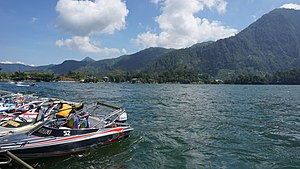

Pesona Indonesia
some beautiful tours in indonesia
Telaga Sarangan

Telaga Sarangan, juga dikenal sebagai Telaga Pasir adalah
telaga alami yang berada di ketinggian1.200 meter di atas
permukaan laut dan terletak di lereng Gunung Lawu, Kecamatan Plaosan,
Kabupaten Magetan, Jawa Timur. Telaga ini berjarak sekitar
16 kilometer arah barat Kota Magetan
lihat detail...
Pantai klayer
 Pantai Klayar adalah sebuah pantai dengan pasir putih dan batu karang
serta tebing-tebing batu yang mengelilingi. Pantai ini terletak di
Pacitan, Jawa Timur dan berbatasan dengan Wonogiri, Jawa Tengah.
Tepatnya berada di Desa Sendang, Kecamatan Donorojo, Kabupaten Pacitan,
Provinsi Jawa Timur
lihat detail....
Pantai Klayar adalah sebuah pantai dengan pasir putih dan batu karang
serta tebing-tebing batu yang mengelilingi. Pantai ini terletak di
Pacitan, Jawa Timur dan berbatasan dengan Wonogiri, Jawa Tengah.
Tepatnya berada di Desa Sendang, Kecamatan Donorojo, Kabupaten Pacitan,
Provinsi Jawa Timur
lihat detail....
Taman Mini Indonesia Indah
 Taman Mini Indonesia Indah
merupakan suatu taman hiburan bertema
budaya Indonesia di Jakarta Timur, DKI Jakarta. Area seluas
kurang lebih 150 hektare[1] atau 1,5 kilometer persegi ini terletak
pada koordinat 6°186.8″LS,106°5347.2″BT. Taman ini merupakan
rangkuman kebudayaan bangsa Indonesia, yang mencakup berbagai aspek
kehidupan sehari-hari masyarakat 26 provinsi Indonesia
(pada tahun 1975) yang ditampilkan dalam anjungan daerah berarsitektur
tradisional, serta menampilkan aneka busana, tarian,
dan tradisi daerah
lihat detail....
Taman Mini Indonesia Indah
merupakan suatu taman hiburan bertema
budaya Indonesia di Jakarta Timur, DKI Jakarta. Area seluas
kurang lebih 150 hektare[1] atau 1,5 kilometer persegi ini terletak
pada koordinat 6°186.8″LS,106°5347.2″BT. Taman ini merupakan
rangkuman kebudayaan bangsa Indonesia, yang mencakup berbagai aspek
kehidupan sehari-hari masyarakat 26 provinsi Indonesia
(pada tahun 1975) yang ditampilkan dalam anjungan daerah berarsitektur
tradisional, serta menampilkan aneka busana, tarian,
dan tradisi daerah
lihat detail....